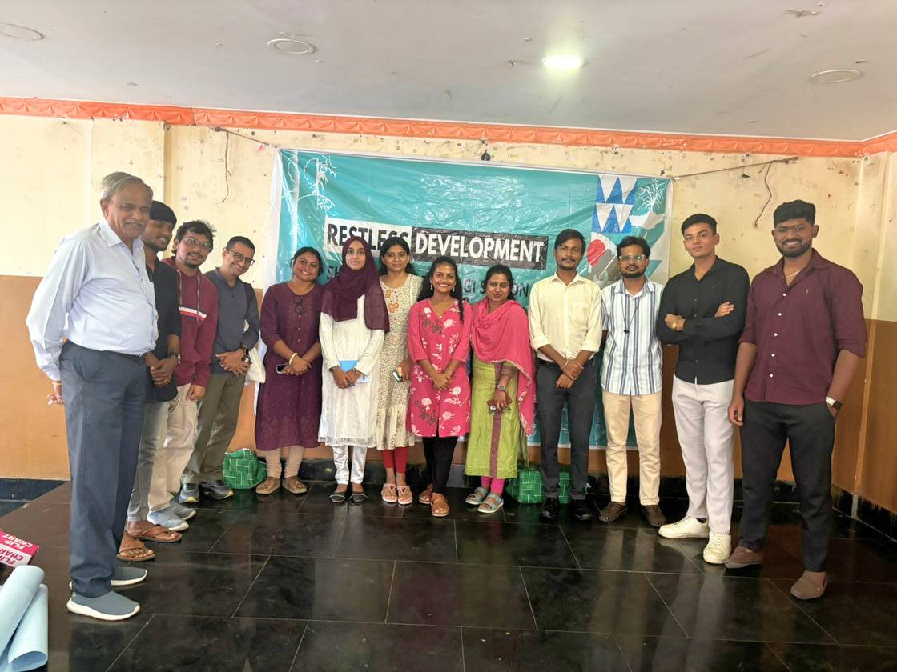
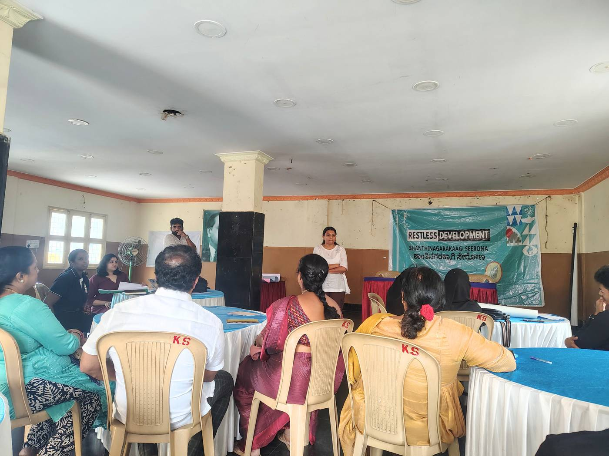
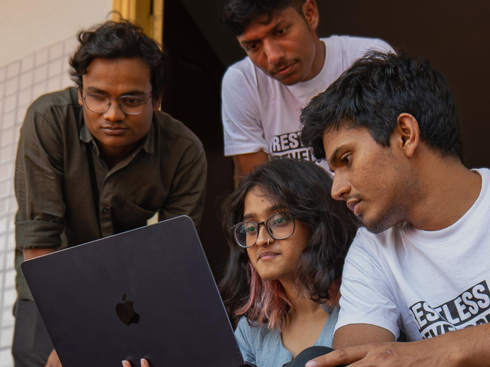

Young people are not beneficiaries or volunteers here. They are changemakers.
The Youth Climate Action Lab (YCAL) is a youth-led climate programme by Restless Development, run in partnership with Grama Vikas. It builds the leadership and practical skills of young people to respond to climate and environmental challenges where they live.
The Lab began in November 2021 as part of the Fair Urban Transitions programme supported by Porticus, starting with youth-led research in five Bengaluru communities. Its third phase ran from December 2024 to November 2025 in Shanthinagar, a dense central Bengaluru ward with informal settlements such as KSRTC Colony and Shakthivel Nagar. Residents there live with poor waste management, unsafe water, sanitation gaps and monsoon flooding.
Since 2021, 33 Youth Climate Leaders have led the Lab. In Phase 3, eight of them, from diverse backgrounds, worked with residents, students, women's collectives, faith institutions and civic bodies, combining structured learning with real action in their own communities.
Impact at a glance
33 young people have led the Lab as Youth Climate Leaders since 2021. The other figures are from Phase 3 in Shanthinagar (2024 to 2025).
Inside the Lab
How the programme works, what youth teams did on the ground, what changed, and the people behind it.

Our journeyHow the Lab grew from 2021 to today, phase by phase.
How it worksFrom onboarding and training to a youth hackathon and action on the ground. Climate actionWhat youth teams did on waste and water in Shanthinagar.
Climate actionWhat youth teams did on waste and water in Shanthinagar. Impact and learningWhat changed, what young people learned and what comes next.
Impact and learningWhat changed, what young people learned and what comes next.
Youth-led researchPhase 1: young people researching climate change in five Bengaluru communities.- Stories of changeYouth leaders, a mentor and a resident on what changed.
In their words
Residents and youth leaders from Shanthinagar on what changed.
“Earlier, people had a habit of dumping waste on the road. Now our colony is clean, and we feel proud of our surroundings.”Lakshmi, resident, KSRTC Colony
“Before this project, we felt helpless about the waste problem. Now we know we can lead change in our own community.”Deekshitha, Youth Climate Leader
“Earlier, waste management felt like someone else's responsibility. Now we all take ownership of keeping our colony clean.”Raja, resident
“For the first time in many years, I see people taking responsibility for both cleanliness and greenery in our colony.”Prakash, resident